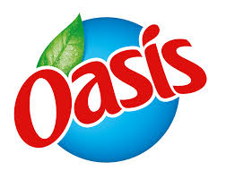

Pour la sortie de sa nouvelle boisson, Oasis organise un concours création. Après la mangue, la fraise, la poire, l'ananas, la pomme, la mûre et tant d'autres, la nouvelle star du jour sera la Papaye. Sais-tu ce que sais ?
Il s'agit d'un fruit originaire du Mexique, elle a une forme ovale et
mesure entre 21 et 31 cm de long et peut peser jusqu'à 5 kg.
N'est-ce pas Fruibuleux ?
La papaye est plus connue sous sa couleur verte mais il lui arrive de
devenir complètement jaune !
Tu ne vois toujours pas ce que c'est ? Ne t'inquiète pas, j'ai pensé à
toi, voici une image de papaye. Alors, ça te donne envie ? Je t'assure elle a une saveur exquise, un poil sucré.
C'est parti maintenant que tu connais la papaye sur le fruit des doigts, on va pouvoir commencer le travail. Depuis son arrivée dans la fruit'zone, la Papaye a complétement perdu la mémoire ! Elle ne sait plus comment elle s'appelle ni ce qu'elle faisait comme travail avant d'arrivée chez nous. Mais heureusement, tu es là maintenant. Tu vas pouvoir nous donner un fruitatisque coup de main !
La papaye veut avoir une histoire à raconter auprès de ses amis les
fruits. Surtout que Sangrine et Raymond insistent pour apprendre à la
connaître.
Si tu acceptes la mission voici ce que nous attendons de toi:
-Invente l'histoire de papaye, bien sûr il faut qu'elle ai un sens.
Assures-toi auprès d'un adulte qu'elle soit réaliste.
-Trouve-lui un petit nom. Après tout, elle ne va pas continuer à
s'appeler papaye non ? Nos équipes ont essayé de lui en trouver un
nouveau mais la papaye est très compliquée en matière de nom. A toi de
trouver celui qui lui plaira.
Une fois que tu auras fait tout ça pense à tout taper sur l'ordinateur
et à nous envoyer ton travail à l'adresse écrite tout en bas de la page.
Bien évidemment, tu peux demander de l'aide à un adulte. On ferme nos
yeux de fruits ne t'inquiète pas.
A ton stylo ! A ton clavier !
Action !
Partie réservée aux parents